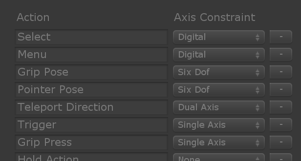
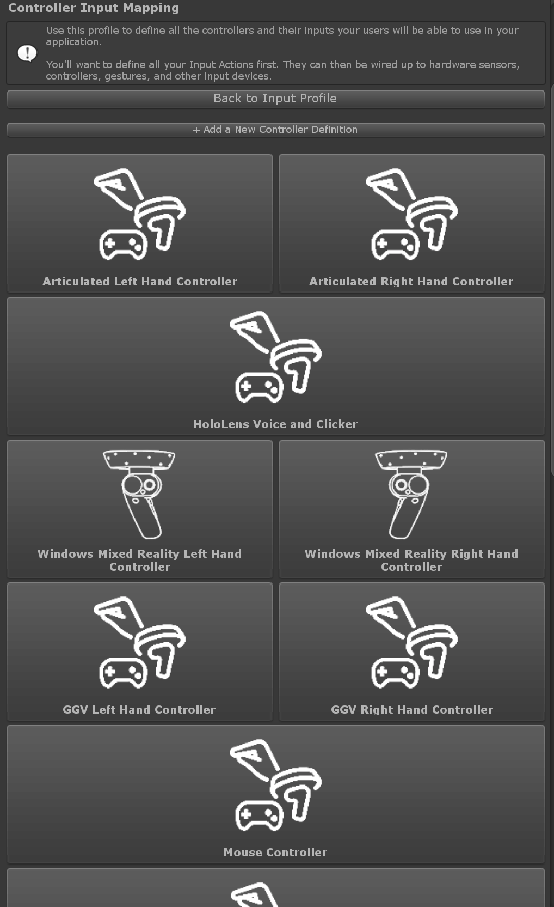
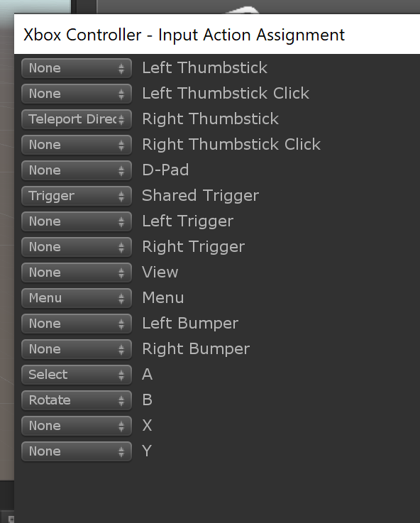

Input Actions （输入动作）
输入动作 是对原始输入的抽象，旨在帮助将应用程序逻辑与产生输入的特定输入源隔离开。例如，定义一个Select动作并将其映射到鼠标左键，游戏手柄中的一个按钮和一个6自由度控制器中的一个触发器，可能会很有用。然后，您可以让您的应用程序逻辑侦听Select输入动作事件，而不必知道可能产生此事件的所有不同输入。
创建输入动作
在MRTK组件的Input System Profile内的Input Actions Profile中配置输入动作，指定动作名称和可以映射到的输入类型 （轴约束(Axis Constraint))）
这些是轴约束 最常用的值：
| 轴约束 | 描述 |
|---|---|
| Digital | 开/关输入，例如游戏手柄或鼠标中的二进制按钮。. |
| Single Axis | 单轴模拟输入，如游戏手柄中的模拟触发器。 |
| Dual Axis | 双轴模拟输入，如摇杆。 |
| Six Dof | 具有6个自由度控制器产生的平移和旋转的3D姿势。 |
您可以在轴类型中找到完整列表.
Mapping Inputs To Actions (将输入映射到动作)
将输入映射到动作的方式取决于输入源的类型：
Controller Inputs (控制器输入)
转到 Input System Profile下的Controller Input Mapping Profile。在这里，您会找到所有支持的控制器的列表：
选择要你想配置的一个，随即出现一个对话框窗口，其中包含所有控制器输入，可让您为每个输入设置一个动作：
Speech Inputs (语音输入)
在Input System Profile下的Speech Command Profile中，您将找到当前定义的语音命令列表。要将其中之一映射到某个动作，只需在Action下拉列表中选择它即可。

Gesture Inputs (手势输入)
Input System Profile下的Gestures Profile包含所有已定义的手势。您可以在Action下拉列表中选择手势并且将它们映射到一个动作。

Handling Input Actions (处理输入动作)
[!警告] 当前，只能使用本节中描述的方法来处理*数字(Digital)*类型的输入动作。对于其他动作类型，您必须直接处理相应输入的事件。例如，要处理映射到控制器输入的6自由度动作，您必须使用
IMixedRealityGestureHandler<T>with T =MixedRealityPose.
处理输入动作的最简单方法是利用 InputActionHandler 脚本。这使您可以使用Unity Events定义要监听的动作并对动作的开始和结束事件做出反应。
如果您想要更多控制权，可以直接在您的脚本中实现IMixedRealityInputActionHandler 接口。查看 输入事件 部分，以了解有关通过handler接口进行事件处理的更多详细信息。
例子
有关示例场景，请参见MixedRealityToolkit.Examples\Demos\Input\Scenes\InputActions 其中显示了如何创建动作，如何将其映射到控制器，语音和手势输入以及如何根据命令旋转对象。